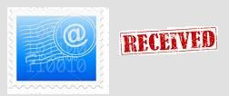
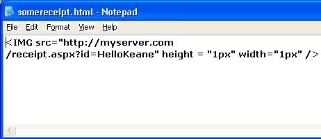
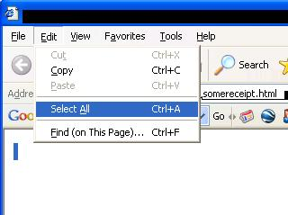
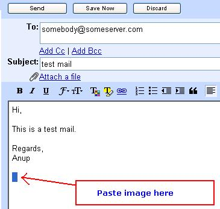

|  |
Hacking the world - Forcing Email Read-Receipts Author: Anup Shinde. |
The basics
Many email spam programs use this technique frequently to create effective spam. The article is completely meant for technical people, but I would try to ease it for the non-technical people, as much as possible.
Note: This technique is not the one used by “Outlook Express” or other software that have an option to request a mail read receipt. In this case we are not requesting the client to send a receipt, but we are attempting our best to force a read receipt.
Background
This technique is basically based on the HTML. Hypertext Markup Language, the coding language used to create hypertext documents for the World Wide Web. In HTML, a block of text can be surrounded with tags that indicate how it should appear (for example, in bold face or italics). This allows electronic publishers to display rich or formatted text/information on the Internet. Therefore, it creates a great substitute for the plain-text content.
HTML being a standard for web publishing and having rich-text functionality, today most E-mail editors allows you to send HTML mails instead of plain text mails. Similarly most of email software allows you to read HTML emails.
The technique that we are going to use here is based on a specific feature of HTML. In HTML a word, a block of text, or an image can be linked to another file on the Web. That another file could be on the same web or from another webpage.
This way the HTML email readers are expected to behave in the same way like the web-browsers.
The trick
The HTML email readers will show all the content that the HTML specifies. Therefore it will also show the external content if the HTML specifies it. Now the point here is that the external content is shown. This external content can be anything, including anything we link it to.
So if I specified an image into the HTML mail with its source from my site as:
<img src = “http://myserver.com/my_picture.jpg” />
It would directly show the image as if it was embedded inside the mail, though it came from outside.
Suppose I want a receipt for the mail written to my colleague Keane. How would I do it?
As you see, the “<IMG>” tag points to an image on my server. But what if I do not point the source to an image, but to some scripted dynamic page that takes the shortened subject of the mail as a parameter. Whenever the mail is opened, the page will get accessed.
We can script this page to perform some activities like sending a mail receipt to us. Since we do not want the image to expose the trick, we reduce its size to “ 1x1 pixels”
<IMG src="http://myserver.com/receipt.aspx?id=HelloKeane" height = "1px" width="1px" />
So we can brief that: Whenever the HTML email is displayed; the image source will be accessed. And whenever the image-source is accessed, we get a mail saying that the subjected mail has been read.
How to plant a “force-receipt” image?
I will explain a very raw method of
doing this.
--> First create a “.html” page. Say “somereceipt.html”.
--> Open it with notepad and put the following line into it.
<IMG src="http://myserver.com/receipt.aspx?id=HelloKeane"
height = "1px" width="1px" />
--> Save the file and close it.

--> Double-click and open the HTML file (in IE or other browser).
--> Press “Ctrl + A” (Select All) and then “Ctrl + C” (Copy).

Open your HTML email editor (Outlook or GMail…anything) and at the end of the mail
press “Ctrl + V”. This will plant the receipt image into the mail. You can send
that mail whenever you want.

The problem with the “raw” method is that you will yourself trigger the mail receipt while opening the HTML page and while pasting it in your email editor. You’ll just need to ignore these.
People who want to use it regularly can use the services from “DidTheyReadIt or ReadNotify”. These services make the procedure very simple.
Sending a read-receipt mail and other details (Using ASP.NET 2.0)
Here comes the more technical part. I am writing a page in ASP.NET 2.0, but you can use any other platform.
As discussed above, we are a passing a query-string parameter to the page. Here, this query string contains the subject that we wrote in the email. You could have other parameter(s) as required.
As soon as the web page (that we scripted) receives these parameters, it sends us the mail that the subjected mail was read.
What all information can we get?
Since the browser/mail reader is indirectly accessing our page, we can get all the information that the browser can provide. For example: IP Address, Browser/Machine information. But there is much more that the browser can give away.
Get your browser spied at http://gemal.dk/browserspy/.
The pages in the above link give a lot of information about your browser and machine.
Here the attached sample code will send a mail receipt along with some easily accessible browser information. This sample creates a HTML mail, to show the information in a formatted manner.
To gather the information about the browser we can use the “Request.Browser.Capabilities” dictionary object available in .NET 2.0.
To get some other information the code uses the following:
- Request.UserHostAddress
- Request.UserHostName
- Request.AcceptTypes
- Request.UserLanguages
In the “Page_Load” event itself, we are creating the HTML mail to be sent to us. The “Request.Browser.Capabilities” object gives us a “System.Collections.IDictionary” type. We iterate through the “Key, value” pair in the dictionary and display the information, as shown below.
System.Collections.IDictionary oDictionary = Request.Browser.Capabilities;
foreach(System.Collections.DictionaryEntry oDictionaryEntry in oDictionary)
{
sHTML += <tr>";
sHTML += "<td>" + (oDictionaryEntry.Key == null ? "NULL" : oDictionaryEntry.Key.ToString()) + "</td>";
sHTML += "<td>" + (oDictionaryEntry.Value==null?"NULL":oDictionaryEntry.Value.ToString()) + "</td>";
sHTML += "</tr>";
}
Source code
The ASP.NET 2.0 based source code can be found here.
Does this always work?
This trick may not always work, especially with the famous public email services. They take enough steps to restrict it, since it is an indirect disclosure of privacy. As the image points to the external content, the user is required to be connected to internet if the receipt is to be received. Also the HTML email reader must be available to the user.
How service providers are restricting it?
Mail service providers like GMail, Yahoo and Hotmail do restrict these things. They simply restrict it by not allowing the “External” content to be displayed. As the image in the above example points to the external content (on your site), this will also get restricted. But it still works with Outlook and many other web-mail services. It will still take time to be restricted from most places. Till then …Enjoy!!!.
Note:
Any example used in this article may contain scrambled.
Please do not hesitate to ask queries/suggestions/issues/anything. Click here for contact information.